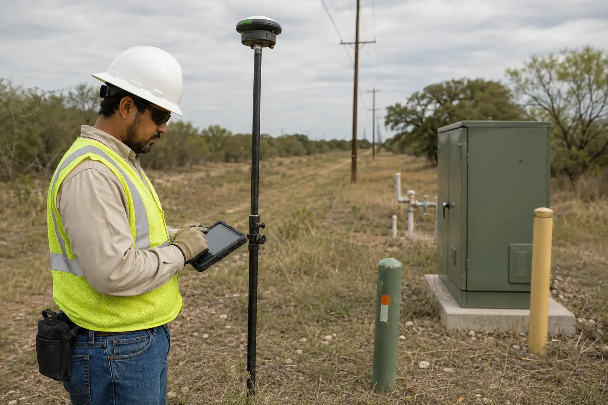

LISTING MEDIA • PROPERTY DOCUMENTATION • SAN ANTONIO + HILL COUNTRY
Make the property easy to understand.
Agent-ready photography, aerials, walkthroughs and property context for homes, land and commercial sites—built around what a buyer needs to see before the showing.
Built for properties where the whole site matters.
Each example gallery shows the actual coverage logic behind a premium listing or visible-condition documentation set: shot purpose, camera angle and a defined deliverable target.
PREMIUM LISTING LAUNCHEstate + setting in one frame
$750K+ HOMES • LUXURY ESTATES • DISTINCTIVE PROPERTIES
Lead with the view buyers cannot get from the driveway.
Aerial stills and motion establish architecture, outdoor living, privacy, access and neighborhood or Hill Country context before the showing.
About these examples: Images are representative service concepts, not completed client projects. Feature callouts and parcel graphics are marketing aids based on supplied or public information and are not land surveys.
CHOOSE THE MEDIA MIX
A clean listing launch, scaled to the property.
Start with the buyer-facing coverage you need. Then add aerial, immersive and documentation layers only where they make the listing clearer.
01
MLS Photography
Interior, exterior and detail coverage with balanced exposure and controlled verticals—organized as a complete buyer-facing story.
Property-size-based image target
MLS, web and high-resolution exports
Key rooms, exterior and amenity coverage
HOMES • CONDOS • PREMIUM RESIDENTIAL02
Aerial & Drone
Deliberate aerial perspectives that show the setting, roofline, access, outdoor living and nearby context—not generic flyover footage.
MLS aerial stills or a larger shot set
Horizontal film and vertical social options
Site, roof and frontage coverage when scoped
LISTINGS • ESTATES • LAND • COMMERCIAL03
Immersive Viewing
Keep the listing useful for relocation and remote buyers with a cinematic walkthrough or a buyer-controlled hosted experience.
Interior/exterior walkthrough sequence
Hosted 3D-tour option
Visual floor-plan or model output when scoped
RELOCATION • LUXURY • REMOTE BUYERS04
Land, Ranch & Site Context
Frame the relationship between access, structures, water, terrain and improvements across properties that cannot be understood from curbside photos alone.
Ground + aerial capture plan
Multi-launch coverage for larger tracts
Supplied-feature callouts and property film options
RANCH • ACREAGE • EQUESTRIAN • COMMERCIAL
INSPECTION-SUPPORT DOCUMENTATION
Make visible conditions easier to review, share and revisit.
For owners, appraisers, contractors, adjusters and project teams, Wise can capture a consistent visual record of accessible property conditions. The deliverable is organized evidence—not a licensed home inspection or engineering opinion.
Organized walkthrough imagery, scan data and location-based records for remote review.

SITE + IMPROVEMENTSFeature inventory
Structures, access, utilities, site features and supplied property information in a clear visual package.
LISTING LAUNCH KIT
Everything delivered in forms agents can actually use.
Each project is prepared for the next handoff: MLS, web, agent marketing and remote buyer review. Select only the pieces that fit the listing.
01MLS + web photo sets
Edited stills in listing-ready and high-resolution formats, with a clear image sequence.
02Branded + clean media
Agent-branded and unbranded video or social exports when selected for the listing.
03Shareable property link
A hosted tour or single-property media link when that delivery layer is scoped.
04Print + QR-ready collateral
Media prepared for a feature sheet, handout or QR handoff when included in the scope.
05Property context graphics
Approximate marketing callouts for supplied features, access and acreage context.
06Documentation index
Organized folders, annotations or location references for visible-condition review.
STARTING PACKAGES
Property media with a clear place to start.
Packages establish an understandable baseline. Final pricing accounts for property size, access, acreage, occupancy, delivery needs and capture complexity.
AERIAL ESSENTIALS
STARTING AT$225
A disciplined aerial set for an agent who needs the property and its setting to read quickly.
Standard packages assume a property within the quoted service area, safe legal flight conditions and normal access. Travel, twilight, rush delivery, extensive revisions, advanced 3D outputs and large-acreage coverage are quoted separately. New to aerial property documentation? Read the San Antonio planning guide →
A SIMPLE REQUEST FLOW
Address to assets—in four steps.
01Share the property
Send the address, listing timeline, approximate acreage and the elements buyers need to understand.
02Choose the media mix
Start with a package, then select aerial, walkthrough, immersive or site-context layers as needed.
03Confirm capture details
Receive a practical scope covering access, weather, delivery target and any special property requirements.
04Receive + launch
Get organized assets ready for MLS, web, email, presentations and agent marketing.
CLEAR SERVICE BOUNDARIES
Documentation and marketing—not a regulated opinion.
Wise Geospatial provides aerial media, visual documentation, 3D capture and marketing-oriented property graphics. These services do not replace a licensed home inspection, engineering evaluation, appraisal, title review or professional land survey.
Boundary lines, dimensions, acreage labels and feature overlays are approximate visual aids based on supplied or public information unless prepared within the licensed professional structure required by Texas law. Thermal and visible imagery identifies areas for further review; it does not diagnose defects.
START A PROPERTY REQUEST
Send the address. We’ll shape the coverage.
Tell us what type of property this is, when it needs to launch and what buyers need to understand. You will receive a practical capture plan and fixed scope—not a generic upsell.